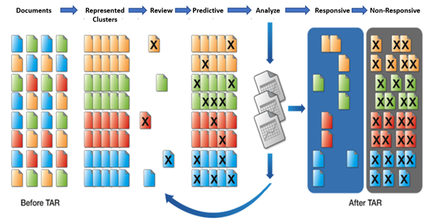
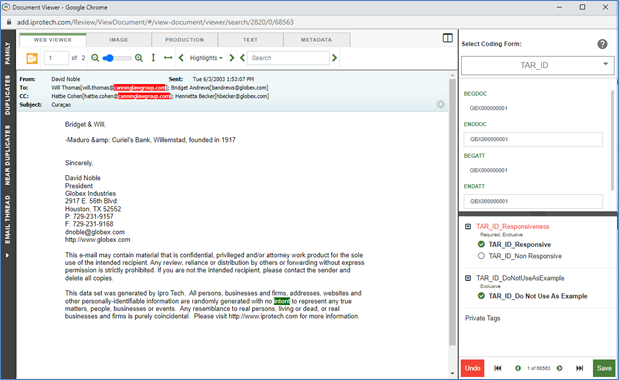
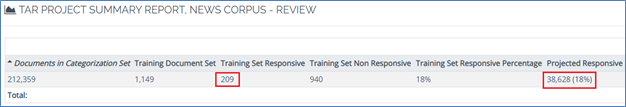
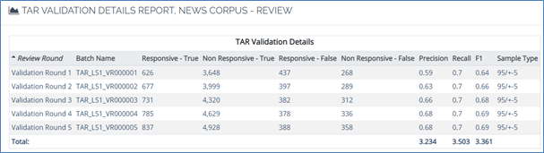
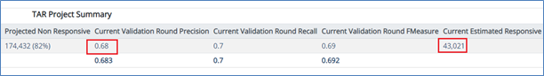
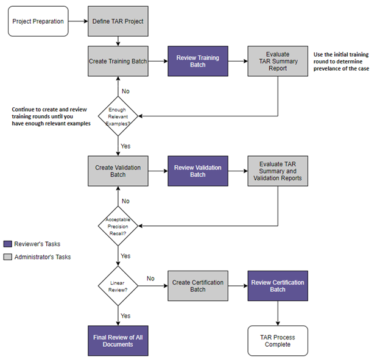

Particularly beneficial for cases that contain large document sets, TAR combines with human expertise to allow documents to be classified more efficiently and accurately than with a human-only review.
TAR project management is straightforward. After a project is created, Eclipse automatically creates all of the components needed for the TAR document evaluation, thus providing a streamlined review workflow process. TAR-specific components that are created include:
|
|
|
A TAR project includes three review phases, as explained in the following table. The flowchart in the section “The TAR Project” shows the basic workflow for a TAR project.
TAR Project Phases
|
Round |
Description |
||
|
Training |
The
training set is based on an Reviewers will assess these documents and tag them with TAR document tags (Responsive, Non Responsive, and optionally Do Not Use as Example).
|
||
|
Validation |
After reviewers have evaluated the TAR project’s training set documents, several random-sample sets of remaining documents must be reviewed to verify existing system decisions and add further examples of each category. Note:
|
||
|
Certification |
A certification review is optional. It is used when the goal of TAR is to limit the number of documents to be reviewed by humans (documents found to be Non Responsive will not be reviewed). Alternatively, a final review of all documents, such as a prioritization review, might be held for remaining documents. |
The following diagram shows the workflow of how

The TAR process begins by creating a sample set of documents that are used to train the system. Analytics accelerates the training process and reduces the number of validation rounds by organizing the data into clusters that are topically related. It creates the initial training set by statistically and strategically pulling documents from cluster centers, providing the expert reviewer with a conceptually diverse group of documents so that it gains the most insight from the first round of review decisions.
The training process is then conducted by human expert reviewer(s). The reviewer(s) can code or tag the documents for the system to use as an example to later retrieve similar documents.

Additional issue coding with sub-category tagging can be set up at the same time without impacting the TAR results. The issue tags can be created within the same tag window and applied to all documents.
Pre-coded documents can be submitted to the TAR project after the first system generated training round is created and completed. The first system generated training round initiates the TAR prediction process. The training round also assists in determining prevalence (that is, an estimated percentage of how much relevant data exists in a data population). Prevalence is recorded in the TAR Project Summary Report as Training Set Responsive Percentage.

Performing additional training rounds up front (providing the system with more responsive examples) will improve the training model.
Once training is completed, the system then categorizes the rest of the documents in the TAR population and initiates a validation round. For validation, TAR uses statistical sampling to create a new round of the documents that have yet to be reviewed. To fine-tune and continue to train the system, the case team reviews this set of documents. Without knowing which category the system has grouped the documents into, the case reviewers tag each document as Relevant or Not Relevant. After a validation round is completed, review of TAR reports is next.

Analysis of the TAR Project Summary Report and TAR Validation Details Report determines whether the system has achieved optimum results.
Recall is a metric representing how much relevant data the system is finding.
Precision is a metric representing how well the system is identifying relevant documents. With consideration of the project goals, review of the recall, precision, and Current Estimated Responsive count in the reports can determine when optimal results are achieved.
An additional round of validation may be suggested if goals are not met. If so, expert reviewers then review another set of documents to further refine the system’s knowledge to accurately code the rest of the document population. This iterative process continues until enough rounds have been completed for the system to achieve optimal results.

As an optional step, TAR can also be used to forgo reviewing documents that are likely Not Relevant. It is recommended to use an additional step to Certify the review by performing an additional validation round on documents that have been categorized by the system as Not Relevant. This process measures the accuracy of the review.

Although TAR can be used to prioritize the review, it is also used to only review the documents that are categorized as relevant, ignoring the rest of the collection. When that method is used, it must be determined when to terminate the review. This hinges on the proportionality considerations outlined in (U.S.) Federal Rules of Civil Procedure 26(b)(2)(C) and 26(g)(1)(B)(iii), which, respectively, limit discovery if “the burden or expense of the proposed discovery outweighs its likely benefit.”
Related pages: